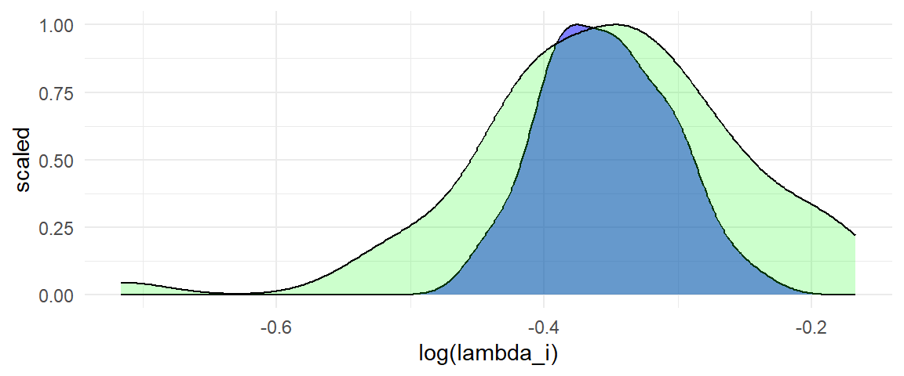
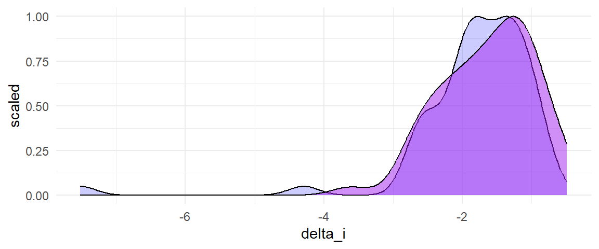
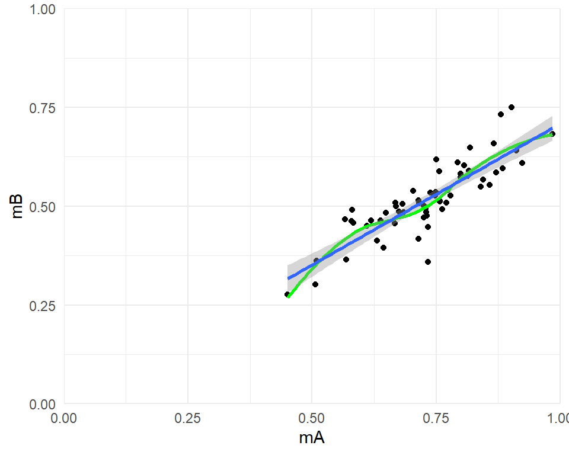

Implications of mean-variance relationships for standardized mean differences
A question came up on the R-SIG-meta-analysis listserv about whether it was reasonable to use the standardized mean difference metric for synthesizing studies where the outcomes are measured as proportions. I think this is an interesting question because, while the SMD could work perfectly fine as an effect size metric for proportions, there are also other alternatives that could be considered, such as odds ratios or response ratios or raw differences in proportions. Further, there are some situations where the SMD has disadvantages for synthesizing contrasts between proportions. Thus, it’s a situation where one has to make a choice about the effect size metric, and where the most common metric (the SMD) might not be the right answer. In this post, I want to provide a bit more detail regarding why I think mean-variance relationships in raw data can signal that the standardized mean differences might be less useful as an effect size metric compared to alternatives.
standardized mean difference
response ratio
distribution theory
meta-analysis
Author
admin
Published
November 2, 2021
I spend more time than I probably should discussing meta-analysis problems on the R-SIG-meta-analysis listserv. The questions that folks pose there are often quite interesting—especially when they’re motivated by issues that they’re wrestling with while trying to complete meta-analysis projects in their diverse fields. For those interested in meta-analytic methodology, I think perusing the mailing list is a good way to get a bit of ground sense about problems that come up in practice and places where there is a need for new methodological work, or at least further methodological guidance.
Recently, a question came up on the listserv about whether it was reasonable to use the standardized mean difference metric for synthesizing studies where the outcomes are measured as proportions. Luke Martinez wrote:
I’m doing a meta-analysis where the papers report only “mean” and “sd” of some form of proportion and/or “mean” and “sd” of corresponding raw frequencies. (For context, the papers ask students to read, find, and correct the wrong words in a text.) … My question is given that all these studies only report “mean” and “sd”, can I simply use a SMD effect size?
I think this is an interesting question because, while the SMD could work perfectly fine as an effect size metric for proportions, there are also other alternatives that could be considered, such as odds ratios or response ratios or raw differences in proportions. Further, there are some situations where the SMD has disadvantages for synthesizing contrasts between proportions. Thus, it’s a situation where one has to make a choice about the effect size metric, and where the most common metric (the SMD) might not be the right answer. As I wrote in reply:
I would suggest that you could also consider other effect measures besides the SMD. For example, the response ratio is also a scale-free metric that could work with the proportion outcomes that you’ve described, and would also be appropriate for raw frequency counts as long as the total number possible is the same for the groups being compared within a given study.
Whether the response ratio would be more appropriate than the SMD is hard to gauge. One would need to know more about how the proportions were assessed and how the assessment procedures varied from study to study. For instance, did some studies use passages with many possible errors to be corrected while other studies used passages with just a few errors? Did the difficulty of the passages differ from study to study? Were there very low or very high mean proportions in any studies? Does there seem to be a relationship between the means and the variances of the proportions of a given group?
In a follow-up, I elaborated on some potential problems with using the SMD:
Variation in the number of possible errors (and perhaps also in the length of the time provided for the test?) suggests that the measures from different studies may have varying degrees of reliability. Varying reliability introduces heterogeneity in the SMD (because the denominator is inflated or shrunk by the degree of reliability).
A relationship between the M and SD of the proportions for a given group suggests that the distribution of the individual-level outcomes might also exhibit mean-variance relationships. (I say “suggests” rather than implies because there’s an ecological inference here, i.e., assuming something about individual-level variation on the basis of group-level variation.) If this supposition is reasonable, then that introduces a further potential source of heterogeneity in the SMDs (study-to-study variation in the M for the reference group influences the SD of the reference group, thereby inflating or shrinking the SMDs).
And I suggested a possible work-flow for examining the choice of effect size metric:
Here’s how I might proceed if I were conducting this analysis:
Calculate both SMDs and log-transformed response ratios for the full set of studies.
Examine the distribution of effect size estimates for each metric (using histograms or funnel plots). If one of the distributions is skewed or has extreme outliers, take that as an indication that the metric might not be appropriate.
Fit meta-analytic models to summarize the distribution of effect sizes in each metric, using a model that appropriately describes the dependence structure of the estimates. Calculate I-squared statistics, give preference to the metric with lower I-squared.
If (2) and (3) don’t lead to a clearly preferable metric, then choose between SMD and RR based on whichever will make the synthesis results easier to explain to people.
(Optional/extra credit) Whichever metric you choose, repeat your main analyses using the other metric and stuff all those results in supplementary materials, to satisfy any inveterate statistical curmudgeons who might review/read your synthesis.
(When I referred to “inveterate statistical curmudgeons”, I mostly had myself in mind.)
In this post, I want to provide a bit more detail regarding why I think mean-variance relationships in raw data can signal that the standardized mean differences might be less useful as an effect size metric compared to alternatives. The concern is actually broader than meta-analyses of outcomes measured as proportions, so I’ll start with a different case and then return to a situation similar to the one described in the original question.
Mean-variance relationships can induce heterogeneity
The standardized mean difference parameter for a given study can be defined as: \[
\delta_i = \frac{\mu_{Bi} - \mu_{Ai}}{\sigma_{Ai}},
\] where \(\mu_{Ai}\) and \(\mu_{Bi}\) are the (population) mean outcomes in group \(A\) and group \(B\) of study \(i\) and \(\sigma_{Ai}\) is the (population) standard deviation in group \(A\) of study \(i\).1 The ideal case for using the SMD metric is when the outcomes in different studies are linearly equatable, so that the outcome scale in one study can be directly translated into the outcome scale of another study. However, if outcomes exhibit mean-variance relationships, linearly equatability seems rather implausible, and we might expect that SMDs will display heterogeneity across studies as a result.
Let me lay out an example of a situation where the outcomes exhibit mean-variance relationships and where, as a consequence, the SMD metric becomes heterogeneous. Suppose that we have \(k\) studies, each involving a two-group comparison, with groups of equal size. In study \(i\), the outcomes in group \(A\) follow a poisson distribution with mean \(\mu_{Ai}\), so that the variance of the outcomes in group \(A\) is also \(\mu_{Ai}\), for \(i = 1,...,k\). The outcomes in group \(B\) follow a poisson distribution with mean \(\mu_{Bi}\), so the variance is also \(\mu_{Bi}\). Now, suppose that there is a fixed, proportional relationship between \(\mu_{Bi}\) and \(\mu_{Ai}\), so that \(\mu_{Bi} = \lambda \mu_{Ai}\) for some \(\lambda > 0\). In other words, the treatment contrast is constant on the scale of the response ratio. However, the means in group \(A\) vary from study to study. To make things concrete, let’s assume that the means in group \(A\) follow a gamma distribution with shape parameter \(\alpha\) and rate parameter \(\beta\): \[
\mu_{Ai} \sim \Gamma(\alpha, \beta).
\] What does this model imply about the distribution of standardized mean differences across this set of studies?
Under this model, the SMD parameter for study \(i\) is: \[
\delta_i = \frac{\mu_{Bi} - \mu_{Ai}}{\sqrt{\mu_{Ai}}} = (\lambda - 1) \times \sqrt{\mu_{Ai}}.
\] The first term in the above expression is a constant that only depend on the size of the response ratio, but the second term is random because we have assumed that the group \(A\) means vary from study to study. It will therefore create heterogeneity in the SMD parameters—the greater the variance of the \(\mu_{Ai}\)’s, the greater the heterogeneity in \(\delta_i\). Specifically, under the above assumptions, the effect size parameters follow a Nakagami distribution: \[
\delta_i \sim \text{Nakagami}\left(m = \alpha, \Omega = \frac{(\lambda - 1)^2 \alpha}{\beta}\right)
\] Thus, even though we have a model where there is an underlying fixed relationship between \(\mu_{Ai}\) and \(\mu_{Bi}\), using the SMD metric for synthesis will lead to a situation with heterogeneous effects (even if all of the studies had large sample sizes and so effect sizes in individual studies are precisely estimated).
An example with proportions
This sort of behavior is not restricted to the poisson-gamma model I sketched above. The key features of that example are a) the assumption that the outcomes have a strong mean-variance relationship and b) the assumption that the \(\mu_{Ai}\)’s are heterogeneous across studies. If both of these hold, then the resulting SMDs will also be heterogeneous. I’ll now describe a similar model, but where the outcomes within each study are proportions.
As before, suppose that we have \(k\) studies, each involving a two-group comparison, with groups of equal size. In study \(i\), the outcomes in group \(A\) follow a binomial distribution with mean proportion \(\pi_{Ai}\) and \(T_i\) trials, so that the variance of the outcomes in group \(A\) is \(\pi_{Ai}\left(1 - \pi_{Ai}\right) T_i\), for \(i = 1,...,k\). The outcomes in group \(B\) also follow a binomial distribution, this one with mean proportion \(\pi_{Bi}\) and \(T_i\) trials, so the variance is \(\pi_{Bi}\left(1 - \pi_{Bi}\right) T_i\). Next, to induce variation in the group-\(A\) means, let’s assume that the mean proportions follow a beta distribution: \[
\pi_{Ai} \sim \text{Beta}(\alpha, \beta).
\]
Finally, suppose that \(\pi_{Bi} = \lambda_i \pi_{Ai}\) for some \(\lambda_i > 0\).
Under these assumptions, the SMD parameter for study \(i\) is: \[
\delta_i = \frac{\pi_{Bi}T_i - \pi_{Ai} T_i}{\sqrt{\pi_{Ai} (1 - \pi_{Ai}) T_i}} = (\lambda_i - 1) \times \sqrt{T_i} \times \sqrt{\frac{\pi_{Ai}}{1 - \pi_{Ai}}}.
\] From the above expression, it can be seen that there are three potential sources of variation in \(\delta_i\): variation in the study-specific response ratio \(\lambda_i\), variation in the group-\(A\) proportions \(\pi_{Ai}\), and variation in the number of trials \(T_i\). The total heterogeneity in \(\delta_i\) will depend on all three, as well as on the co-variation between \(\lambda_i\), \(\pi_{Ai}\), and \(T_i\).
To make this concrete, let me simulate some meta-analytic data that follows the above model. To do so, I’ll need to make some additional distributional assumptions2:
that \(\lambda_i\) is log-normally distributed such that \(\ln \lambda_i \sim N(\ln \Lambda, \tau^2)\);
that the number of trials is uniformly distributed on the integers between \(t_{min}\) and \(t_{max}\);
that \(N_i\), the number of observations per group in study \(i\), is uniformly distributed on the integers between \(n_{min}\) and \(n_{max}\); and
that \(\pi_{Ai}\), \(\lambda_i\), \(T_i\), and \(N_i\) are mutually independent.
Here’s a function that generates study-specific parameter values and sample proportions:
For the specified parameter values, there is only a small amount of true heterogeneity in the log of the response ratios (the blue density). Of course, there is further heterogeneity in the log response ratio estimates (the green density) due to sampling error:
library(ggplot2)ggplot(dat) +geom_density(aes(log(lambda_i), ..scaled..), fill ="blue", alpha =0.5) +geom_density(aes(lRR, ..scaled..), fill ="green", alpha =0.2) +theme_minimal()

A random effects meta-analysis confirms that there is only a modest degree of true heterogeneity in the log response ratios:
library(metafor)rma(yi = lRR, vi = V_lRR, data = dat)
Random-Effects Model (k = 60; tau^2 estimator: REML)
tau^2 (estimated amount of total heterogeneity): 0.0028 (SE = 0.0013)
tau (square root of estimated tau^2 value): 0.0529
I^2 (total heterogeneity / total variability): 42.01%
H^2 (total variability / sampling variability): 1.72
Test for Heterogeneity:
Q(df = 59) = 100.6304, p-val = 0.0006
Model Results:
estimate se zval pval ci.lb ci.ub
-0.3498 0.0111 -31.5751 <.0001 -0.3715 -0.3281 ***
---
Signif. codes: 0 '***' 0.001 '**' 0.01 '*' 0.05 '.' 0.1 ' ' 1
Contrast this with what we get from using the standardized mean difference metric. The distributions of true effect sizes (blue) and of effect size estimates (light purple) have large spread as well as strong left skew:
library(ggplot2)ggplot(dat) +geom_density(aes(delta_i, ..scaled..), fill ="blue", alpha =0.2) +geom_density(aes(d, ..scaled..), fill ="purple", alpha =0.5) +theme_minimal()

A random effects meta-analysis of the standardized mean differences shows a greater degree of true heterogeneity, both in terms of the estimated \(\tau\) and in \(I^2\), or the proportion of total variance in the effect size estimates that is attributable to true heterogeneity:
rma(yi = d, vi = V_d, data = dat)
Random-Effects Model (k = 60; tau^2 estimator: REML)
tau^2 (estimated amount of total heterogeneity): 0.2838 (SE = 0.0743)
tau (square root of estimated tau^2 value): 0.5327
I^2 (total heterogeneity / total variability): 72.61%
H^2 (total variability / sampling variability): 3.65
Test for Heterogeneity:
Q(df = 59) = 203.0513, p-val < .0001
Model Results:
estimate se zval pval ci.lb ci.ub
-1.5967 0.0824 -19.3771 <.0001 -1.7582 -1.4352 ***
---
Signif. codes: 0 '***' 0.001 '**' 0.01 '*' 0.05 '.' 0.1 ' ' 1
Diagnostics
The code above more-or-less implements the workflow I suggested for deciding between the standardized mean difference or response ratio metric (for proportions, we could also add further comparisons with log odds ratios and with raw differences in proportions). But is there further diagnostic information in the data that could provide a better sense of what is going on? I think there are a few things that might be helpful to consider.
First, the issues I’m concerned with here will arise when there are mean-variance relationships in the outcomes. To get at that, we can simply plot the means and SDs of each group. In the code below, I re-structure the data so that there is one row per group per study. I then plot the SD versus the mean of each group:
The plot above does suggest a mean-variance relationship, though it’s a bit messy. We can do better by using the scaled SD, after adjusting for the degree of spread that we would expect given \(T_i\):
From the above, it does appear that there could be a relationship between the scaled SD and the mean. The black curve indicates the theoretical mean-variance relationship that would be expected under the binomial distribution, and indeed the empirical relationship appears to be quite similar. This suggests that mean-variance relationships might be at play (a correct supposition, since of course we know the true data-generating process here).
Second, since the outcomes in each group are all proportions, we can simply plot the mean in group \(B\) versus the mean in group \(A\):
ggplot(dat, aes(mA, mB)) +geom_point() +geom_smooth(se =FALSE, color ="green") +geom_smooth(method ="lm", formula = y ~ x) +coord_cartesian(xlim =c(0,1), ylim =c(0,1), expand =FALSE) +theme_minimal()

This plot shows that there is a strong linear relationship between the two means, with a best-fit line that might go through the origin. This suggests that the response ratio might be an appropriate metric (although the difference in proportions might also be appropriate here, since a line with unit slope would probably fit quite well).
Third (and most speculatively/hand-wavily), I think exploratory moderator analysis can be useful here, but interpreted in a non-typical way. Under the model I’ve sketched, we would expect that the standardized mean difference estimates should be systematically associated with the group-\(A\) means, as well as with the number of trials used to assess outcomes. The scatter-plots below show that this is indeed the case (the right-hand plot shows \(d_i\) versus \(\sqrt{T_i}\)).
In the left-hand plot, there does not appear to be any relationship between the effect size estimates and the group-\(A\) means. In the right-hand plot, there does seem to be a mild relationship between the effect size estimates and \(\sqrt{T_i}\), which is a bit surprising, although the strength of the relationship is much weaker than what we saw with the standardized mean differences. Meta-regression analysis supports these interpretations:
rma(lRR ~ mA +sqrt(T_i), vi = V_lRR, data = dat)
Mixed-Effects Model (k = 60; tau^2 estimator: REML)
tau^2 (estimated amount of residual heterogeneity): 0.0019 (SE = 0.0011)
tau (square root of estimated tau^2 value): 0.0439
I^2 (residual heterogeneity / unaccounted variability): 32.87%
H^2 (unaccounted variability / sampling variability): 1.49
R^2 (amount of heterogeneity accounted for): 31.30%
Test for Residual Heterogeneity:
QE(df = 57) = 84.4977, p-val = 0.0105
Test of Moderators (coefficients 2:3):
QM(df = 2) = 10.6344, p-val = 0.0049
Model Results:
estimate se zval pval ci.lb ci.ub
intrcpt -0.2362 0.0950 -2.4864 0.0129 -0.4224 -0.0500 *
mA 0.1061 0.0948 1.1196 0.2629 -0.0796 0.2918
sqrt(T_i) -0.0553 0.0179 -3.0852 0.0020 -0.0904 -0.0202 **
---
Signif. codes: 0 '***' 0.001 '**' 0.01 '*' 0.05 '.' 0.1 ' ' 1
Now, you might think that a meta-analyst should get excited about the standardized mean difference results, since they’ve uncovered two systematic predictors of effect size magnitude. However, both of these factors are purely operational, arbitrary features of the (simulated) study designs, rather than theoretically or substantively interesting features of the studies. Considered in this light, the finding that they each moderate the magnitude of the standardized mean differences is, more than anything else, annoying. If we wanted to examine other more theoretically interesting moderators, we’d have to do so in a way that accounts for these methodological predictors. At minimum, that would mean including them all in a meta-regression (leading to a model with 3+ predictors). Further, we would have to worry about whether the functional form of the regression is reasonable. Simply adding the theoretical moderator to the model amounts to assuming that it predicts effect size magnitude in a linear, additive fashion, but what if that’s not the right model? Since we know the true data-generating process here, we can see that the linear, additive model would not be correct. But in practice, when we don’t know the true process, this would be much murkier.
The general principle that I’m suggesting here is that effect sizes should ideally be on a metric that is independent of arbitrary methodological factors because this should reduce overall heterogeneity and simplify the model, making it easier to detect real relations of interest. If one has a choice between several different effect size metrics, then a metric that shows clear associations with methodological factors should be discounted in favor of metrics that do not show such associations or show them only weakly. How to fully operationalize this sort of decision (as one would need to when writing a protocol for a meta-analysis, for example), I’m not yet sure about. It seems like a useful avenue for further methodological work.
Footnotes
Yes, there are other ways to define the SMD. Yes, usually we use the standard deviation pooled across both groups. I’m going to use the standard deviation in group \(A\) alone because it simplifies some of the mathy bits. Please feel free to work through the case with a pooled SD for yourself.↩︎
One of the vexing things about simulations is that you often end up needing to specify a bunch of assumptions about auxiliary quantities, beyond those of the model you’re actually interested in investigating.↩︎
Source Code
---title: Implications of mean-variance relationships for standardized mean differencesauthors: admindate: '2021-11-02'categories:- standardized mean difference- response ratio- distribution theory- meta-analysisdescription: A question came up on the R-SIG-meta-analysis listserv about whether it was reasonable to use the standardized mean difference metric for synthesizing studies where the outcomes are measured as proportions. I think this is an interesting question because, while the SMD could work perfectly fine as an effect size metric for proportions, there are also other alternatives that could be considered, such as odds ratios or response ratios or raw differences in proportions. Further, there are some situations where the SMD has disadvantages for synthesizing contrasts between proportions. Thus, it's a situation where one has to make a choice about the effect size metric, and where the most common metric (the SMD) might not be the right answer. In this post, I want to provide a bit more detail regarding why I think mean-variance relationships in raw data can signal that the standardized mean differences might be less useful as an effect size metric compared to alternatives.code-tools: true---```{r setup, echo = FALSE}knitr::opts_chunk$set(message = FALSE, warning = FALSE, fig.retina = 2)```I spend more time than I probably should discussing meta-analysis problems on the [R-SIG-meta-analysis listserv](https://stat.ethz.ch/mailman/listinfo/r-sig-meta-analysis). The questions that folks pose there are often quite interesting---especially when they're motivated by issues that they're wrestling with while trying to complete meta-analysis projects in their diverse fields. For those interested in meta-analytic methodology, I think perusing the mailing list is a good way to get a bit of ground sense about problems that come up in practice and places where there is a need for new methodological work, or at least further methodological guidance.Recently, a [question came up](https://stat.ethz.ch/pipermail/r-sig-meta-analysis/2021-September/003318.html) on the listserv about whether it was reasonable to use the standardized mean difference metric for synthesizing studies where the outcomes are measured as proportions. Luke Martinez wrote:> I'm doing a meta-analysis where the papers report only "mean" and "sd" of some form of proportion and/or "mean" and "sd" of corresponding raw frequencies. (For context, the papers ask students to read, find, and correct the wrong words in a text.) ... My question is given that all these studies only report "mean" and "sd", can I simply use a SMD effect size?I think this is an interesting question because, while the [SMD could work perfectly fine](https://stat.ethz.ch/pipermail/r-sig-meta-analysis/2021-September/003320.html) as an effect size metric for proportions, there are also other alternatives that could be considered, such as odds ratios or response ratios or raw differences in proportions. Further, there are some situations where the SMD has disadvantages for synthesizing contrasts between proportions. Thus, it's a situation where one has to make a choice about the effect size metric, and where the most common metric (the SMD) might not be the right answer. As [I wrote in reply](https://stat.ethz.ch/pipermail/r-sig-meta-analysis/2021-October/003331.html): > I would suggest that you could also consider other effect measures besides the SMD. For example, the response ratio is also a scale-free metric that could work with the proportion outcomes that you've described, and would also be appropriate for raw frequency counts as long as the total number possible is the same for the groups being compared within a given study.> > Whether the response ratio would be more appropriate than the SMD is hard to gauge. One would need to know more about how the proportions were assessed and how the assessment procedures varied from study to study. For instance, did some studies use passages with many possible errors to be corrected while other studies used passages with just a few errors? Did the difficulty of the passages differ from study to study? Were there very low or very high mean proportions in any studies? Does there seem to be a relationship between the means and the variances of the proportions of a given group?In a [follow-up](https://stat.ethz.ch/pipermail/r-sig-meta-analysis/2021-October/003361.html), I elaborated on some potential problems with using the SMD:> * Variation in the number of possible errors (and perhaps also in the length of the time provided for the test?) suggests that the measures from different studies may have varying degrees of reliability. Varying reliability introduces heterogeneity in the SMD (because the denominator is inflated or shrunk by the degree of reliability).> > * A relationship between the M and SD of the proportions for a given group suggests that the distribution of the individual-level outcomes might also exhibit mean-variance relationships. (I say "suggests" rather than implies because there's an ecological inference here, i.e., assuming something about individual-level variation on the basis of group-level variation.) If this supposition is reasonable, then that introduces a further potential source of heterogeneity in the SMDs (study-to-study variation in the M for the reference group influences the SD of the reference group, thereby inflating or shrinking the SMDs).And I suggested a possible work-flow for examining the choice of effect size metric: > Here's how I might proceed if I were conductingthis analysis:> > 1. Calculate *both* SMDs and log-transformed response ratios for the full set of studies.> 2. Examine the distribution of effect size estimates for each metric (using histograms or funnel plots). If one of the distributions is skewed or has extreme outliers, take that as an indication that the metric might not be appropriate.> 3. Fit meta-analytic models to summarize the distribution of effect sizes in each metric, using a model that appropriately describes the dependence structure of the estimates. Calculate I-squared statistics, give preference to the metric with lower I-squared.> 4. If (2) and (3) don't lead to a clearly preferable metric, then choose between SMD and RR based on whichever will make the synthesis results easier to explain to people.> 5. (Optional/extra credit) Whichever metric you choose, repeat your main analyses using the other metric and stuff all those results in supplementary materials, to satisfy any inveterate statistical curmudgeons who might review/read your synthesis.(When I referred to "inveterate statistical curmudgeons", I mostly had myself in mind.)In this post, I want to provide a bit more detail regarding why I think mean-variance relationships in raw data can signal that the standardized mean differences might be less useful as an effect size metric compared to alternatives. The concern is actually broader than meta-analyses of outcomes measured as proportions, so I'll start with a different case and then return to a situation similar to the one described in the original question. ## Mean-variance relationships can induce heterogeneityThe standardized mean difference parameter for a given study can be defined as:$$\delta_i = \frac{\mu_{Bi} - \mu_{Ai}}{\sigma_{Ai}}, $$where $\mu_{Ai}$ and $\mu_{Bi}$ are the (population) mean outcomes in group $A$ and group $B$ of study $i$ and $\sigma_{Ai}$ is the (population) standard deviation in group $A$ of study $i$.[^nitpicking]The ideal case for using the SMD metric is when the outcomes in different studies are linearly equatable, so that the outcome scale in one study can be directly translated into the outcome scale of another study. However, if outcomes exhibit mean-variance relationships, linearly equatability seems rather implausible, and we might expect that SMDs will display heterogeneity across studies as a result.[^nitpicking]: Yes, there are other ways to define the SMD. Yes, usually we use the standard deviation pooled across both groups. I'm going to use the standard deviation in group $A$ alone because it simplifies some of the mathy bits. Please feel free to work through the case with a pooled SD for yourself. Let me lay out an example of a situation where the outcomes exhibit mean-variance relationships and where, as a consequence, the SMD metric becomes heterogeneous. Suppose that we have $k$ studies, each involving a two-group comparison, with groups of equal size. In study $i$, the outcomes in group $A$ follow a poisson distribution with mean $\mu_{Ai}$, so that the variance of the outcomes in group $A$ is also $\mu_{Ai}$, for $i = 1,...,k$. The outcomes in group $B$ follow a poisson distribution with mean $\mu_{Bi}$, so the variance is also $\mu_{Bi}$. Now, suppose that there is a fixed, proportional relationship between $\mu_{Bi}$ and $\mu_{Ai}$,so that $\mu_{Bi} = \lambda \mu_{Ai}$ for some $\lambda > 0$. In other words, the treatment contrast is *constant* on the scale of the response ratio.However, the means in group $A$ vary from study to study. To make things concrete, let's assume that the means in group $A$ follow a gamma distribution with shape parameter $\alpha$ and rate parameter $\beta$:$$\mu_{Ai} \sim \Gamma(\alpha, \beta).$$What does this model imply about the distribution of standardized mean differences across this set of studies?Under this model, the SMD parameter for study $i$ is:$$\delta_i = \frac{\mu_{Bi} - \mu_{Ai}}{\sqrt{\mu_{Ai}}} = (\lambda - 1) \times \sqrt{\mu_{Ai}}.$$The first term in the above expression is a constant that onlydepend on the size of the response ratio, but the second term is random because we have assumed that the group $A$ means vary from study to study. It will therefore create heterogeneity in the SMD parameters---the greater the variance of the $\mu_{Ai}$'s, the greater the heterogeneity in $\delta_i$. Specifically, under the above assumptions, the effect size parameters follow a [Nakagami distribution](https://en.wikipedia.org/wiki/Nakagami_distribution): $$\delta_i \sim \text{Nakagami}\left(m = \alpha, \Omega = \frac{(\lambda - 1)^2 \alpha}{\beta}\right)$$Thus, even though we have a model where there is an underlying fixed relationship between $\mu_{Ai}$ and $\mu_{Bi}$, using the SMD metric for synthesis will lead to a situation with heterogeneous effects (even if all of the studies had large sample sizes and so effect sizes in individual studies are precisely estimated).## An example with proportionsThis sort of behavior is not restricted to the poisson-gamma model I sketched above. The key features of that example are a) the assumption that the outcomes have a strong mean-variance relationship and b) the assumption that the $\mu_{Ai}$'s are heterogeneous across studies. If both of these hold, then the resulting SMDs will also be heterogeneous. I'll now describe a similar model, but where the outcomes within each study are proportions. As before, suppose that we have $k$ studies, each involving a two-group comparison, with groups of equal size. In study $i$, the outcomes in group $A$ follow a binomial distribution with mean proportion $\pi_{Ai}$ and $T_i$ trials, so that the variance of the outcomes in group $A$ is $\pi_{Ai}\left(1 - \pi_{Ai}\right) T_i$, for $i = 1,...,k$. The outcomes in group $B$ also follow a binomial distribution, this one with mean proportion $\pi_{Bi}$ and $T_i$ trials, so the variance is $\pi_{Bi}\left(1 - \pi_{Bi}\right) T_i$. Next, to induce variation in the group-$A$ means, let's assume that the mean proportions follow a beta distribution:$$\pi_{Ai} \sim \text{Beta}(\alpha, \beta).$$Finally, suppose that $\pi_{Bi} = \lambda_i \pi_{Ai}$ for some $\lambda_i > 0$. Under these assumptions, the SMD parameter for study $i$ is:$$\delta_i = \frac{\pi_{Bi}T_i - \pi_{Ai} T_i}{\sqrt{\pi_{Ai} (1 - \pi_{Ai}) T_i}} = (\lambda_i - 1) \times \sqrt{T_i} \times \sqrt{\frac{\pi_{Ai}}{1 - \pi_{Ai}}}.$$From the above expression, it can be seen that there are three potential sources of variation in $\delta_i$: variation in the study-specific response ratio $\lambda_i$, variation in the group-$A$ proportions $\pi_{Ai}$, and variation in the number of trials $T_i$. The total heterogeneity in $\delta_i$ will depend on all three, as well as on the co-variation between $\lambda_i$, $\pi_{Ai}$, and $T_i$. To make this concrete, let me simulate some meta-analytic data that follows the above model. To do so, I'll need to make some additional distributional assumptions[^vexing]: 1. that $\lambda_i$ is log-normally distributed such that $\ln \lambda_i \sim N(\ln \Lambda, \tau^2)$; 2. that the number of trials is uniformly distributed on the integers between $t_{min}$ and $t_{max}$; 3. that $N_i$, the number of observations per group in study $i$, is uniformly distributed on the integers between $n_{min}$ and $n_{max}$; and 4. that $\pi_{Ai}$, $\lambda_i$, $T_i$, and $N_i$ are mutually independent. [^vexing]: One of the vexing things about simulations is that you often end up needing to specify a bunch of assumptions about auxiliary quantities, beyond those of the model you're actually interested in investigating. Here's a function that generates study-specific parameter values and sample proportions:```{r}sim_binom_summary <-function(pi_i, T_i, n_i) { y <-rbinom(n_i, size = T_i, prob = pi_i) / T_idata.frame(M =mean(y), SD =sd(y))}sim_props <-function( k, # number of studies alpha, beta, # parameters of pi_Ai distribution, Lambda, tau, # parameters of lambda_i distribution t_min, t_max, # parameters of T_i distribution n_min, n_max # parameters of the sample size distribution) {# simulate parameters pi_Ai <-rbeta(k, shape1 = alpha, shape2 = beta) lambda_i <-exp(rnorm(k, mean =log(Lambda), sd = tau)) pi_Bi <- lambda_i * pi_Ai T_i <-sample(t_min:t_max, size = k, replace =TRUE) delta_i <- (pi_Bi - pi_Ai) * T_i /sqrt(pi_Ai * (1- pi_Ai) * T_i) n_i <-sample(n_min:n_max, size = k, replace =TRUE)# simulate data stats_A <- purrr::pmap_dfr(list(pi_i = pi_Ai, T_i = T_i, n_i = n_i), sim_binom_summary) stats_B <- purrr::pmap_dfr(list(pi_i = pi_Bi, T_i = T_i, n_i = n_i), sim_binom_summary)# compile res <-data.frame(pi_Ai = pi_Ai, pi_Bi = pi_Bi, lambda_i = lambda_i, T_i = T_i, delta_i = delta_i, n_i = n_i,mA = stats_A$M, sdA = stats_A$SD,mB = stats_B$M, sdB = stats_B$SD )# effect size calculations res <- metafor::escalc(data = res, measure ="ROM", var.names =c("lRR", "V_lRR"),m1i = mB, m2i = mA, sd1i = sdB, sd2i = sdA,n1i = n_i, n2i = n_i ) res <- metafor::escalc(data = res, measure ="SMD", var.names =c("d", "V_d"),m1i = mB, m2i = mA, sd1i = sdB, sd2i = sdA,n1i = n_i, n2i = n_i ) res}set.seed(20211024)dat <-sim_props(k =60, alpha =12, beta =4, Lambda =0.7, tau = .05,t_min =5, t_max =18,n_min =10, n_max =40)head(dat)```For the specified parameter values, there is only a small amount of true heterogeneity in the log of the response ratios (the blue density). Of course, there is further heterogeneity in the log response ratio estimates (the green density) due to sampling error:```{r, fig.width = 6, fig.height = 2.5}library(ggplot2)ggplot(dat) + geom_density(aes(log(lambda_i), ..scaled..), fill = "blue", alpha = 0.5) + geom_density(aes(lRR, ..scaled..), fill = "green", alpha = 0.2) + theme_minimal()```A random effects meta-analysis confirms that there is only a modest degree of true heterogeneity in the log response ratios:```{r}library(metafor)rma(yi = lRR, vi = V_lRR, data = dat)```Contrast this with what we get from using the standardized mean difference metric. The distributions of true effect sizes (blue) and of effect size estimates (light purple) have large spread as well as strong left skew:```{r, fig.width = 6, fig.height = 2.5}library(ggplot2)ggplot(dat) + geom_density(aes(delta_i, ..scaled..), fill = "blue", alpha = 0.2) + geom_density(aes(d, ..scaled..), fill = "purple", alpha = 0.5) + theme_minimal()```A random effects meta-analysis of the standardized mean differences shows a greater degree of true heterogeneity, both in terms of the estimated $\tau$ and in $I^2$, or the proportion of total variance in the effect size estimates that is attributable to true heterogeneity:```{r}rma(yi = d, vi = V_d, data = dat)```## DiagnosticsThe code above more-or-less implements the workflow I suggested for deciding between the standardized mean difference or response ratio metric (for proportions, we could also add further comparisons with log odds ratios and with raw differences in proportions). But is there further diagnostic information in the data that could provide a better sense of what is going on? I think there are a few things that might be helpful to consider.First, the issues I'm concerned with here will arise when there are mean-variance relationships in the outcomes. To get at that, we can simply plot the means and SDs of each group. In the code below, I re-structure the data so that there is one row per group per study. I then plot the SD versus the mean of each group:```{r, fig.width = 5, fig.height = 3.5}library(dplyr)library(tidyr)long_summary_stats <- dat %>% select(n_i, T_i, mA, sdA, mB, sdB) %>% pivot_longer(cols = c(mA, sdA, mB, sdB), names_to = c(".value","group"), names_pattern = "(m|sd)(A|B)")ggplot(long_summary_stats, aes(m, sd, color = group)) + geom_point() + geom_smooth(se = FALSE) + scale_x_continuous(limits = c(0, 1), expand = c(0,0)) + expand_limits(y = 0) + theme_minimal() + theme(legend.position = c(0.1, 0.9))```The plot above does suggest a mean-variance relationship, though it's a bit messy. We can do better by using the scaled SD, after adjusting for the degree of spread that we would expect given $T_i$:```{r, fig.width = 5, fig.height = 3.5}long_summary_stats %>% mutate( sd_scaled = sd * sqrt(T_i) ) %>% ggplot(aes(m, sd_scaled, color = group)) + geom_point() + geom_smooth(se = FALSE) + geom_function(fun = function(x) sqrt(x * (1 - x)), color = "black") + scale_x_continuous(limits = c(0, 1), expand = c(0,0)) + expand_limits(y = 0) + theme_minimal() + theme(legend.position = c(0.1, 0.9))```From the above, it does appear that there could be a relationship between the scaled SD and the mean. The black curve indicates the theoretical mean-variance relationship that would be expected under the binomial distribution, and indeed the empirical relationship appears to be quite similar. This suggests that mean-variance relationships might be at play (a correct supposition, since of course we know the true data-generating process here). Second, since the outcomes in each group are all proportions, we can simply plot the mean in group $B$ versus the mean in group $A$: ```{r, fig.width = 5, fig.height = 4}ggplot(dat, aes(mA, mB)) + geom_point() + geom_smooth(se = FALSE, color = "green") + geom_smooth(method = "lm", formula = y ~ x) + coord_cartesian(xlim = c(0,1), ylim = c(0,1), expand = FALSE) + theme_minimal()```This plot shows that there is a strong linear relationship between the two means, with a best-fit line that might go through the origin. This suggests that the response ratio might be an appropriate metric (although the difference in proportions might also be appropriate here, since a line with unit slope would probably fit quite well).Third (and most speculatively/hand-wavily), I think exploratory moderator analysis can be useful here, but interpreted in a non-typical way. Under the model I've sketched, we would expect that the standardized mean difference estimates should be systematically associated with the group-$A$ means, as well as with the number of trials used to assess outcomes. The scatter-plots below show that this is indeed the case (the right-hand plot shows $d_i$ versus $\sqrt{T_i}$). ```{r, fig.width = 7, fig.height = 3.5, out.width = "100%"}library(patchwork)mA_d_plot <- ggplot(dat, aes(mA, d)) + geom_point() + geom_smooth(se = FALSE, color = "green") + geom_smooth(method = "lm") + scale_x_continuous(limits = c(0, 1), expand = c(0,0)) + theme_minimal()Ti_d_plot <- ggplot(dat, aes(sqrt(T_i), d)) + geom_point() + geom_smooth(se = FALSE, color = "green") + geom_smooth(method = "lm") + theme_minimal()mA_d_plot + Ti_d_plot```This impression is also born out by a meta-regression that includes the group-$A$ means and $\sqrt{T_i}$ as moderators:```{r}rma(d ~ mA +sqrt(T_i), vi = V_d, data = dat)```Here are the same plots as above, but using the log of the response ratio as the effect size metric:```{r, fig.width = 7, fig.height = 3.5, out.width = "100%"}mA_lRR_plot <- ggplot(dat, aes(mA, lRR)) + geom_point() + geom_smooth(se = FALSE, color = "green") + geom_smooth(method = "lm") + scale_x_continuous(limits = c(0, 1), expand = c(0,0)) + theme_minimal()Ti_lRR_plot <- ggplot(dat, aes(sqrt(T_i), lRR)) + geom_point() + geom_smooth(se = FALSE, color = "green") + geom_smooth(method = "lm") + theme_minimal()mA_lRR_plot + Ti_lRR_plot```In the left-hand plot, there does not appear to be any relationship between the effect size estimates and the group-$A$ means. In the right-hand plot, there does seem to be a mild relationship between the effect size estimates and $\sqrt{T_i}$, which is a bit surprising, although the strength of the relationship is much weaker than what we saw with the standardized mean differences. Meta-regression analysis supports these interpretations:```{r}rma(lRR ~ mA +sqrt(T_i), vi = V_lRR, data = dat)```Now, you might think that a meta-analyst should get excited about the standardized mean difference results, since they've uncovered two systematic predictors of effect size magnitude. However, both of these factors are purely operational, arbitrary features of the (simulated) study designs, rather than theoretically or substantively interesting features of the studies. Considered in this light, the finding that they each moderate the magnitude of the standardized mean differences is, more than anything else, _annoying_. If we wanted to examine other more theoretically interesting moderators, we'd have to do so in a way that accounts for these methodological predictors. At minimum, that would mean including them all in a meta-regression (leading to a model with 3+ predictors). Further, we would have to worry about whether the functional form of the regression is reasonable. Simply adding the theoretical moderator to the model amounts to assuming that it predicts effect size magnitude in a linear, additive fashion, but what if that's not the right model? Since we know the true data-generating process here, we can see that the linear, additive model _would not_ be correct. But in practice, when we don't know the true process, this would be much murkier.The general principle that I'm suggesting here is that effect sizes should ideally be on a metric that is _independent_ of arbitrary methodological factors because this should _reduce_ overall heterogeneity and _simplify_ the model, making it easier to detect real relations of interest. If one has a choice between several different effect size metrics, then a metric that shows clear associations with methodological factors should be discounted in favor of metrics that do not show such associations or show them only weakly. How to fully operationalize this sort of decision (as one would need to when writing a protocol for a meta-analysis, for example), I'm not yet sure about. It seems like a useful avenue for further methodological work.